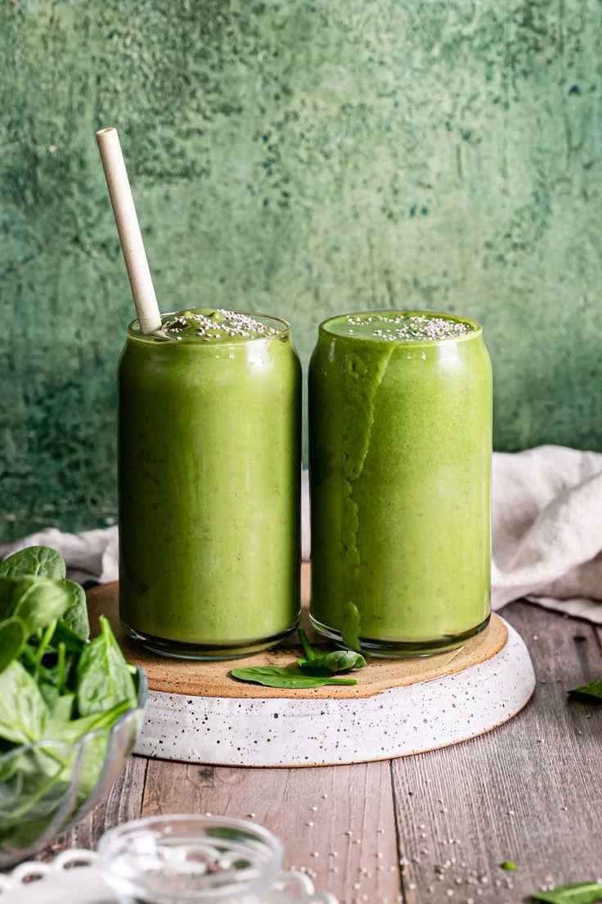

Green Smoothie

Servings: 1-2
Prep Time : 2 minutes
Cook Time : 2-3 minutes
Total Time : 5 minutes
To make the green smoothie, start by washing the spinach and kale (if using fresh), and then peel and chop the banana.
Measure out the frozen mango, pineapple, and any additional ingredients like chia seeds, flaxseeds, honey, ginger, spirulina or matcha powder, and lemon juice.
Add the spinach, kale, banana, frozen mango, frozen pineapple, Greek yogurt, and almond milk to a blender. Blend on high for 1-2 minutes or until smooth, adding more almond milk or water if needed to adjust the consistency.
Taste and add more sweetener or lemon juice if desired, then pour the smoothie into glasses.
Optionally, top with chia seeds, granola, or fresh fruit for added texture and enjoy immediately.
Ingredients List
- For the Smoothie Base
- 1 cup spinach (fresh or frozen)
- 1/2 cup kale (stems removed, fresh or frozen)
- 1 ripe banana (for natural sweetness and creaminess)
- 1/2 cup frozen mango (adds tropical sweetness)
- 1/2 cup frozen pineapple (adds a tangy flavor and vitamin C)
- 1/2 cup Greek yogurt (or plant-based yogurt for dairy-free option)
- 1 cup unsweetened almond milk (or any milk of your choice)
- 1/2 cup whole milk (or any milk of your choice)
- For Additional Nutrients and Flavor
- 1 tbsp chia seeds (for omega-3 fatty acids and fiber)
- 1 tbsp flaxseeds (for added fiber and healthy fats)
- 1 tsp honey or maple syrup (optional, for added sweetness)
- 1/2 tsp ginger (fresh or ground)
- 1/4 tsp spirulina powder or matcha powder
- Juice of 1/2 lemon (optional, for a citrusy kick and vitamin C)
- Optional Toppings
- Chia seeds, hemp seeds, or granola for added texture
- Sliced fruits (like berries, kiwi, or apple slices) for garnish